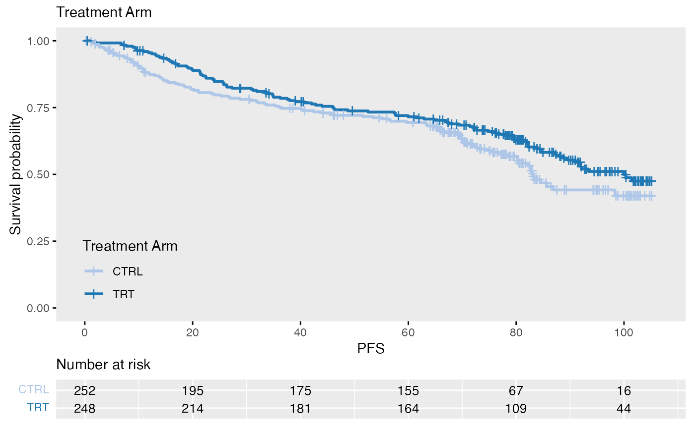
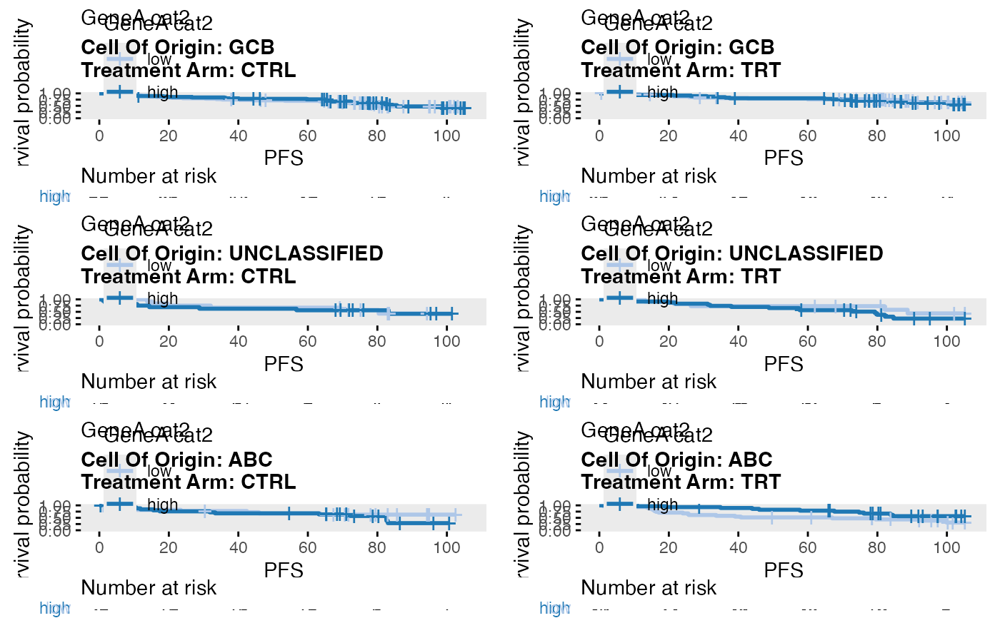

wrapper_KM_plot_core.RdKM plot
wrapper_KM_plot_core(
data,
tte_var,
censor_var,
covariate_var,
colors = NULL,
linetypes = 1,
variable_names = NULL,
title = TRUE,
subtitle = TRUE,
xlab = TRUE,
legend_colors_title = TRUE,
legend_position = c(0.03, 0.03),
legend_justification = c(0, 0),
break_time_by = NULL,
max_tte = NULL,
risk_table = TRUE,
conf_int = FALSE,
surv_median_line = "none",
ggtheme = ggplot2::theme_get(),
line_size = 1,
title_size = NULL,
label_size = NULL,
rel_heights = c(5, 1),
background_grid_major = "none",
level_mapping = NULL,
risk_table_labels = TRUE,
print_hr = FALSE,
print_mst = FALSE,
print_pvalues = FALSE,
print_options = NULL,
cox_covariate_var = NULL,
cox_strat_var = NULL
)
wrapper_KM_plot_core_strat(
data,
tte_var,
censor_var,
covariate_var,
strat1_var = NULL,
strat2_var = NULL,
colors = NULL,
linetypes = 1,
variable_names = NULL,
title = TRUE,
xlab = TRUE,
strat1_label_both = TRUE,
strat2_label_both = TRUE,
legend_colors_title = TRUE,
legend_position = c(0.03, 0.03),
legend_justification = c(0, 0),
break_time_by = NULL,
max_tte = NULL,
risk_table = TRUE,
conf_int = FALSE,
surv_median_line = "none",
ggtheme = ggplot2::theme_get(),
line_size = 1,
title_size = NULL,
label_size = NULL,
rel_heights = c(5, 1),
background_grid_major = "none",
level_mapping = NULL,
risk_table_labels = TRUE,
print_hr = FALSE,
print_mst = FALSE,
print_pvalues = FALSE,
print_options = NULL,
cox_covariate_var = NULL,
cox_strat_var = NULL,
strat_scales = "fixed",
strat1_nrow = 1,
strat1_ncol = NULL,
strat2_nrow = NULL,
strat2_ncol = 1
)Data frame.
Name of the variable containing time-to-event data.
Name of the variable containing censoring information. Censor variable must be numeric and encode 1 for event and 0 for censor.
Name of variable that defines the subgroups where the survival is calculated. This variable must be a factor.
Named vector with level mapping. The names correspond to the original levels of covariate_var.
Possible values: "levels", "shape"
Named vector. The default is c(npcx = 1, npcy = 0.05, hjust = 1, vjust = 0, size = 4) for text in the bottom right corner. For text in the top right corner use c(npcx = 1, npcy = 1, hjust = 1, vjust = 1, size = 4)
Name of the firts stratification variable.
Name of the second stratification variable.
data(bdata)
data <- bdata
tte_var <- "PFS"
censor_var <- "PFS_Event"
covariate_var <- "Treatment_Arm"
wrapper_KM_plot_core(data = data, tte_var = tte_var, censor_var = censor_var, covariate_var = covariate_var)

data(bdata)
data <- bdata
data$GeneA_cat2 <- wrapper_cut_2groups(data$GeneA)
tte_var <- "PFS"
censor_var <- "PFS_Event"
covariate_var <- "GeneA_cat2"
strat1_var = "Treatment_Arm"
strat2_var = "Cell_Of_Origin"
wrapper_KM_plot_core_strat(data = data, tte_var = tte_var, censor_var = censor_var, covariate_var = covariate_var, strat1_var = strat1_var, strat2_var = strat2_var)
